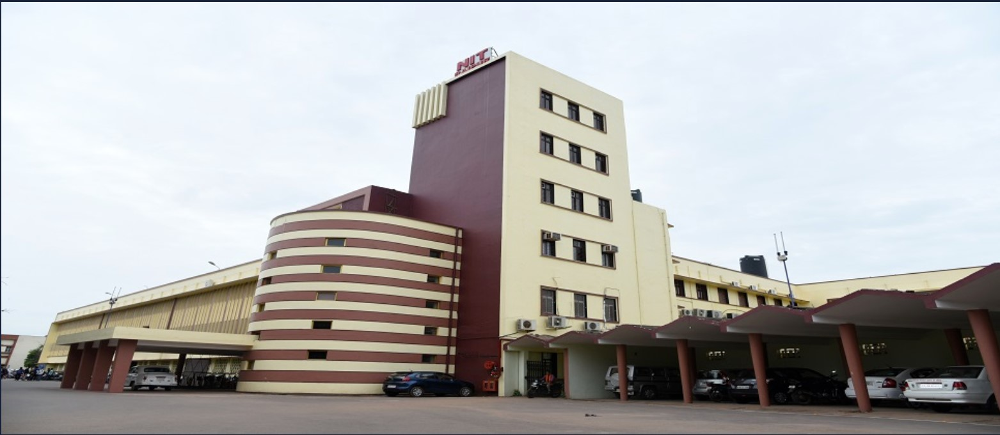

Education
-
Bachelor in Technology (B.Tech), Mechanical Engineering
National Institute of Technology, Raipur 2020-Present
CPI (Till 6th Sem) - 8.67/10 -
High School
Holy Cross School,Raipur-
Class 12th (CBSE) 2019-2020
Percentage- 92.6% -
Class 10th (CBSE) 2017-2018
Percentage- 89.6%
-
Class 12th (CBSE) 2019-2020
ABOUT NIT RAIPUR
National Institute of Technology Raipur (erstwhile Government Engineering College Raipur), situated in the capital of the state of Chhattisgarh, is serving the cause of technical education for more than six decades. This institute has unique privilege of being blessed by the first President of India Dr. Rajendra Prasad in the foundation laying ceremony on 14th September 1956, and again by the first Prime Minister of India Pt. Jawahar Lal Nehru, inaugurating the institute building on 14th March 1963. To harness the ample mineral resources in the region and to fuel the growth of the nation, the foundation stone of National Institute of Technology Raipur (then Government Engineering College, Raipur), was laid by the first President of India, Dr. Rajendra Prasad on 14th September 1956 as Govt College of Mining and Metallurgy. The institute was then inaugurated by the first Prime minister of India, Jawaharlal Nehru on 14th March 1963.